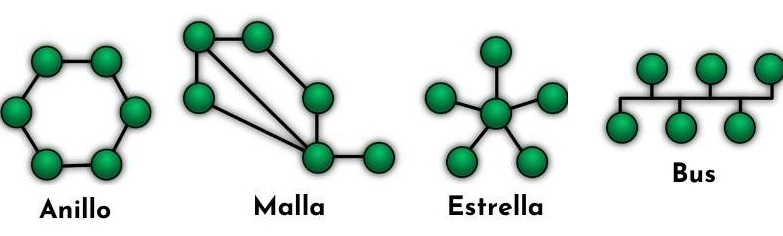
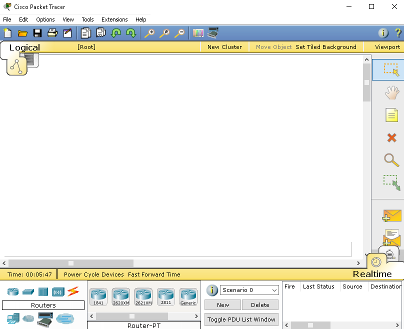
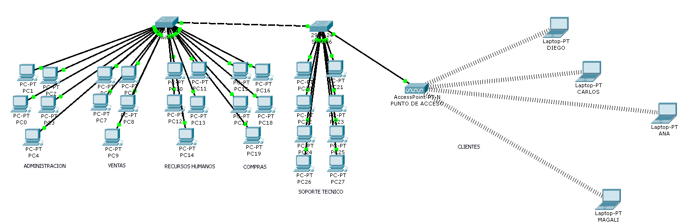

Topología en Estrella
Todos los equipos se conectan a un nodo central.
Ventajas
- Fácil instalación.
- No afecta toda la red si falla un cable.
Desventajas
- Depende del nodo central.
- Más cableado.
Concepto, clasificación y topologías de red
Una red informática es un conjunto de computadoras y dispositivos conectados entre sí para compartir información, recursos y servicios.
Permite intercambiar datos, acceder a internet, compartir archivos e impresoras y trabajar colaborativamente.
Privadas: requieren usuario y contraseña.
Públicas: acceso libre.
P2P: sin servidor central.
Cliente-Servidor: con servidor central.
Definen cómo se organizan y conectan los dispositivos dentro de una red.

Todos los equipos se conectan a un nodo central.
Todos comparten un cable principal.
Los equipos forman un círculo.
Todos los dispositivos están conectados entre sí.
| Topología | Ventaja | Desventaja |
|---|---|---|
| Estrella | Fácil uso | Depende del nodo |
| Bus | Barata | Falla total |
| Anillo | Ordenada | Poco flexible |
| Malla | Segura | Cara |
El software Cisco Packet Tracer es una herramienta de simulación de redes diseñada principalmente para aprender, practicar y experimentar con redes de computadoras sin necesidad de tener los equipos físicos. Es muy usado por estudiantes y profesionales que estudian redes, especialmente aquellos que siguen cursos de Cisco Networking Academy.
En resumen, Cisco Packet Tracer es un laboratorio virtual de redes: simula hardware y software de Cisco para que puedas aprender y practicar sin necesidad de comprar routers o switches reales.


Una dirección IP (Internet Protocol) es un identificador único asignado a cada dispositivo conectado a una red que utiliza el protocolo de Internet, como computadoras, celulares o routers.
Es como la dirección de tu casa, pero en Internet, para que los datos sepan a dónde ir.
192.168.0.1. Límite: ~4.3 mil millones de
direcciones posibles.
2001:0db8:85a3:0000:0000:8a2e:0370:7334. Necesaria por
la escasez de IPv4 y permite muchas más direcciones.
186.130.42.15.
cmd → ipconfigifconfig o ip addr| Clase | Rango del primer octeto | Uso principal |
|---|---|---|
| A | 0 – 127 | Redes muy grandes |
| B | 128 – 191 | Redes medianas |
| C | 192 – 223 | Redes pequeñas / domésticas |
| D | 224 – 239 | Multicast (envío a varios destinos) |
| E | 240 – 255 | Experimental / investigación |
Nota: La clase 127 se reserva para localhost (127.0.0.1),
que es tu propio equipo.
Toma el primer número de tu IP. Ejemplo:
IP = 192.168.10.5 → primer número = 192 → Clase C
Una máscara de subred define qué parte de la IP corresponde a la red y qué parte a los hosts. Se combina con la IP para determinar si dos dispositivos están en la misma red.
Ejemplo:
192.168.1.10255.255.255.0255.255.255.0/n indica el número de bits para la red. Ejemplo:
192.168.1.10/24 → equivale a 255.255.255.0
| Clase IP | Máscara típica | CIDR | Hosts posibles |
|---|---|---|---|
| A | 255.0.0.0 | /8 | 16,777,214 |
| B | 255.255.0.0 | /16 | 65,534 |
| C | 255.255.255.0 | /24 | 254 |
Cálculo de hosts: 2^n − 2, donde n es el número de bits
para hosts (se restan 2 para la dirección de red y broadcast).
La puerta de enlace es un dispositivo (normalmente un router) que conecta tu red local con otras redes, generalmente Internet.
Es como la puerta de tu casa: para salir a Internet, necesitas pasar por ella. Los dispositivos en una red local envían al gateway los datos destinados a otras redes.
Ejemplo de red doméstica:
192.168.1.10255.255.255.0192.168.1.1 (el router)
Esto significa que cualquier IP fuera del rango
192.168.1.x se enviará al router para su direccionamiento
correcto.